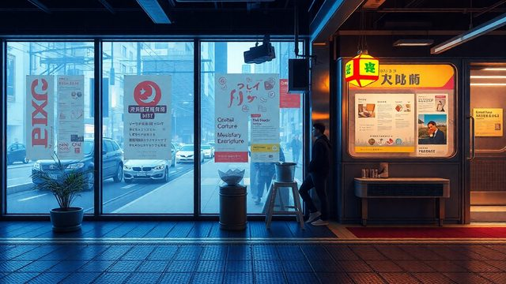

CH02-064 — images
【過剰シミュレーション】考えすぎが行動を止める
ep
CH02
Script Viewer
snapshot
guide
script
audio
thumb
images
CH02-064
images
updated_at: 2026-01-12T10:15:07.743046Z
run_id:
CH02-064_mix433_20260106
CH02-064
頭の騒音／優しい解決策
CH02-064
危険回避の欲求／頭の中の循環／一文のゴール設定／枠の重要性
CH02-064
情報収集のリズム／シミュレーションの制限／数の力／十分の基準
CH02-064
ハイデガーの不安論／体の動き
CH02-064
選択肢の絞り込み／考えの外出し
CH02-064
捨てる練習／言葉の力／考えと動きの分離／時間の枠
CH02-064
失敗の解剖／責任の分担／思考と行動の往復
CH02-064
小さな行動のロープ／独り言の変化／後悔の余白
CH02-064
期待の軽さ／読むと動くのセット／動かないリスク
CH02-064
試しの小さな痛み／交互のバランス／視点の変化
CH02-064
先送りのコスト／音量の下げ方／自分軸への回帰
CH02-064
動きながらの理解／読む量の分割／決めないことの決断
CH02-064
体の緩み／他人の耳の力／月ごとのテーマ
CH02-064
進みの記録／荒いデモの力
CH02-064
時間のバッファ
CH02-064
静寂の効果／言葉に出す力／中間の終わり
CH02-064
完成の定義／質と速度のバランス
CH02-064
モノタスクの時間
CH02-064
公開締め切り
CH02-064
進捗の視覚化
CH02-064
エネルギーの設計
CH02-064
インキュベーションの時間／代償行動の気づき
CH02-064
小さな祝祭
CH02-064
疲労と飽きの区別
CH02-064
仕掛かりの減らし
CH02-064
短いスプリント
CH02-064
評価の距離
CH02-064
マルチプロジェクト管理／終わりの切り上げ
CH02-064
未来の自分への信頼
CH02-064
横滑りの技術
CH02-064
完成と改善の分離
CH02-064
罪悪感の活用／環境の見える化
CH02-064
終わりの祝福
CH02-064
締め切りの使い分け
CH02-064
心理的安全／物理的な終わり
CH02-064
週次振り返りの習慣／遊び心の重要性／小さな達成感の積み重ね…
CH02-064
決定ログの効果／二段階決断のメリット
CH02-064
成功の映像
CH02-064
緊急停止ボタン
CH02-064
やらない決断
CH02-064
夜の出口
CH02-064
想像力の活用
CH02-064
形にする練習／進む力の育成
CH02-064
ウィトゲンシュタインの言葉／動きの地図
CH02-064
情報の断食／選択の減らし
CH02-064
デフォルトの足場／速度と方向／できたことリスト
CH02-064
場所の切り替え／完璧な自分の棚置き／決める練習

CH02-064
考えすぎの強み／六つの道具